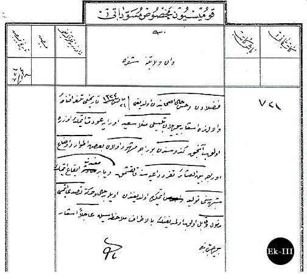

|
Ýstanbul'dan Van'a dönüþüne dair bir belge |
  
|
|
Ýstanbul'dan Van'a dönüþüne dair bir belge |
|
Van Valiliði'ne Zaptiye Nezareti'nden gönderilen 19 Temmuz 1908 tarihli tezkirede, Bediüzzaman'ýn o tarihlerde Ýstanbul'dan uzaklaþtýrýlmak istendiði anlaþýlmaktadýr. Bu tezkirede Molla Said'in Van'a dönmek üzere olduðundan bahsedilerek, Ýstanbul'da kendisinde bazý istenmeyen tavýrlarýn görüldüðünden söz edilerek, bu tavýrlarýn Van'da da devam etmesi halinde aþiret arasýnda kendisinin bir baþ olarak karýþýklýk çýkarmasýndan endiþe duyulur. Van Vilayeti'nden bu endiþeleri duymalarýnda haklý olup olmadýklarýný sorar. Bu tezkirede ayrýca, 21 Mayýs 1324 tarihli Van'dan gelen bir telgraftan söz edilir. Buradan anlaþýldýðýna göre Van Valiliði'nden gelen bu telgrafta Molla Said övülerek faziletlerinden bahsedilmektedir.
Bu tezkirenin gönderildiði 19 Temmuz 1908'de Bediüzzaman'ýn Ýstanbul'dan Van'a gönderilmesine karar verildiði anlaþýlmaktadýr. Ancak, bu tarihten kýsa bir süre sonra II. Meþrutiyet ilan edilecek ve Bediüzzaman bu süreçte de etkin rol alarak yazý ve nutuklarýyla Meþrutiyet'i destekleyecektir. Bu belgeye dayanarak Bediüzzaman’ýn II. Abdülhamid ile arasý iyi olmadýðýndan Van’a gönderilme kararý verildiðini söylemek mümkündür. Ancak, bu sýrada II. Meþrutiyet’in ilan edilmesi Bediüzzaman’ýn Van’a dönmesini engelleyerek Ýstanbul’da etkin rol oynamasýna neden olduðu anlaþýlmaktadýr. (Selim Sönmez)
Bediüzzaman’ýn Ýstanbul'dan Van'a dönüþüne dair belgenin iki farklý nüshasý
1.Nüsha: Dahiliye Nezareti Mektubî Kalemi nüshasý

2.Nüsha: Komisyon-ý Mahsus Müsevvedâtý nüshasý (BOA., ZB., 620/31,21)

Dahiliye Nezareti Mektubî Kalemi’nce yazýlan belge þöyle der:
“Van vilayet-i aliyyesine
Fuzaladan ve hüsn-i hal ashabýndan olduðu 21 Mayýs 324 tarihli telgrafname-i vaâlâlarýnda iþ’ar buyrulan Bitlisli Molla Said oraya avdet etmek üzeredir. Ancak kendisinden buraca meþhud olan bazý etvar ve evza’ oraca beyn’el-aþâir teferrüd daiyesine kalkýþmak veya bir mefsedet îka etmek þüphesini tevlid etmekte olduðundan öyle bir hal ve harekete tasaddi etmesi me’mul ve kâbil olup olmadýðýnýn bi’l-etraf mülahazasýyla acilen iþâr buyrulmasý babýnda ..”
6 Temmuz 1324/19 Temmuz 1908